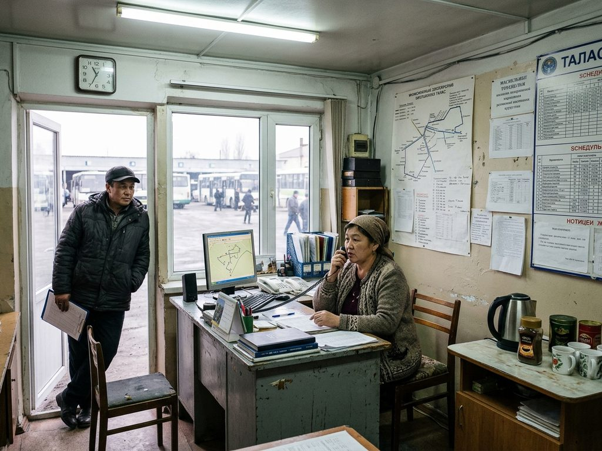

Routes

Buses are run by the Bus Park. Marshrutkas are run by private carriers under route licences from the City Hall's Transport and Roads Department; the register below is the one in force from 1 January 2026. The same number can be a bus and a marshrutka (bus 31 goes to the air base, marshrutka 31 to the Hippodrome).
City buses
| No. | Route | Every, min | Fare |
|---|---|---|---|
| 1 | Central Bus Station – Communications Square via Bazar-i Kalan, Silk Road Arena, Central Square, Liberty Boulevard… | 10-14 | 2 som |
| 2 | Talas railway station – Hospital No. 1 via Regional Hospital, Cinema Boulevard, Liberty Boulevard, Central Square… | 12-16 | 2 som |
| 4 | TSU – Shahr-i Kabud via Station District, Alikhan Media Center, Central Square, Silk Road Arena… | 9-13 | 2 som |
| 5 | Communications Square – Hippodrome via Bank of Irad, City Hall, Central Post Office, Liberty Boulevard… | 14-18 | 2 som |
| 10 | Pedagogical Institute – Alatau Heights (Plaza) via City Hall, Central Post Office, Liberty Boulevard, Cinema Boulevard… | 15-20 | 2 som |
| 11 | Free Economic Zone – Talas railway station via Customs terminal, Leather Factory, Central Bus Station, Bazar-i Kalan… | 12-20 | 2 som |
| 14 | Semiz – Old City (Temir-Kapka) via Semiz cemetery, Cattle Mart, Western Corridor, Communications Square… | 15-20 | 2 som |
| 16 | Central Square – Alatau Heights (Plaza) via Altyn Tower, Gymnasium No. 4, Bus Park, American School | 16-22 | 2 som |
| 31 | Bazar-i Kalan – Air Base South Checkpoint via Silk Road Arena, Central Square, Liberty Boulevard, Cinema Boulevard… | 30-30 | 5 som |
Marshrutkas (register of licensed routes)
| No. | Route | Every, min | Carrier |
|---|---|---|---|
| 3 | Semiz – Central Square via Semiz cemetery, Cattle Mart, Western Corridor, Cold Storage… | 7 | Nurbek Trans LLC |
| 6 | Bazar-i Kalan – Free Economic Zone via Central Bus Station, Leather Factory, Customs terminal | 6 | Jibek Jol Marshrut LLC |
| 7 | Talas railway station – Central Bus Station via Regional Hospital, Cinema Boulevard, Liberty Boulevard, Central Square… | 6 | Taza Jol LLC |
| 8 | Cold Storage – Talas railway station via Attelkom Park, Trans-Talas Highway, Cathedral, Regional Hospital | 8 | Nurbek Trans LLC |
| 9 | TSU – Hippodrome via Station District, Alikhan Media Center, Central Square, Soviet Centre… | 8 | Shamal Trans LLC |
| 12 | Talasfilm – Kashkar-Aryk via Talas railway station, Alikhan Media Center, Cinema Boulevard, Liberty Boulevard… | 14 | Bulak Trans LLC |
| 15 | Central Bus Station – TSU via Bazar-i Kalan, Silk Road Arena, Opera Theatre, Soviet Centre… | 25 | Nurbek Trans LLC |
| 17 | Bazar-i Kalan – Gendarmerie Academy via Jibek Jolu market, Old City (Temir-Kapka), Kashkar-Aryk | 20 | Talas-Sprinter LLC not running |
| 18 | Alatau Heights – Shahr-i Kabud via Television Hill, National Library, TSU, Station District… | 10 | Bereket Trans LLC |
| 19 | Alatau Heights (Plaza) – TSU via Alatau Heights, Television Hill, National Library | 20 | Alatau Shuttle LLC |
| 21 | Hippodrome – Talas railway station via Fire Brigade, Soviet Centre, Central Square, Alikhan Media Center | 8 | Taza Jol LLC not running |
| 22 | Air base strip – TSU via Conagra plant, Lienzo Charro, Cottonwood Estates, Fire Station No. 2… | 9 | Nurbek Trans LLC |
| 23 | Youth Soccer Academy – Talas railway station via American School, Bus Park, Gymnasium No. 4, Station District | 10 | Aksakal Jolu cooperative |
| 24 | Hospital No. 1 – TSU via Fire Brigade, Soviet Centre, Altyn Tower, Gymnasium No. 4… | 20 | Talas-Sprinter LLC |
| 27 | Northern District – Talas railway station via Customs terminal, Leather Factory, Central Bus Station, Bazar-i Kalan… | 10 | Nurbek Trans LLC |
| 28 | Communications Square – Central Bus Station via Bank of Irad, City Hall, Central Post Office, Liberty Boulevard… | 14 | IE Ergeshova G. |
| 29 | Hippodrome – Central Bus Station via Dairy Combine, Northern District, Widow's Horse Memorial | 10 | Bulak Trans LLC |
| 30 | Bazar-i Kalan – Conservatory via Silk Road Arena, Central Square, Alikhan Media Center, Station District… | 8 | Talas-Sprinter LLC |
| 31 | Communications Square – Hippodrome via Bank of Irad, City Hall, Central Post Office, Liberty Boulevard… | 11 | Talas-Sprinter LLC |
| 32 | TSU – Communications Square via Station District, Alikhan Media Center, Cinema Boulevard, Liberty Boulevard… | 9 | Talas-Sprinter LLC |
| 33 | Free Economic Zone – Hippodrome via Customs terminal, Northern District, Dairy Combine | 10 | Bereket Trans LLC |
| 34 | TSU – Shahr-i Kabud via Station District, Gymnasium No. 4, Altyn Tower, Central Square… | 7 | IE Sultanova Ch. |
| 35 | Alatau Heights (Plaza) – Talas railway station via Alatau Heights, Television Hill, National Library, TSU… | 25 | Kyzyl-Too Trans LLC |
| 37 | Talas railway station – Gendarmerie Academy via Regional Hospital, Cinema Boulevard, Liberty Boulevard, Central Post Office… | 7 | Taza Jol LLC |
| 38 | Communications Square – Semiz via Western Corridor, Cattle Mart, Semiz cemetery | 7 | Sapar Trans LLC |
| 39 | Central Bus Station – Hospital No. 1 via Bazar-i Kalan, Silk Road Arena, Opera Theatre, Soviet Centre… | 25 | Talas-Sprinter LLC |
| 40 | Cottonwood Estates – eastern edge (Kök-Bel road) via Fire Station No. 2, Cattle Mart, Western Corridor, Communications Square… | 14 | Nurbek Trans LLC |
| 43 | Bazar-i Kalan – Alatau Heights via Silk Road Arena, Opera Theatre, Soviet Centre, Altyn Tower… | 12 | Semiz Express LLC |
| 44 | Kashkar-Aryk – TSU via Old City (Temir-Kapka), Kalan Darwaza, Central Post Office, Liberty Boulevard… | 10 | IE Sultanova Ch. |
| 46 | TSU – Northern District via Station District, Gymnasium No. 4, Altyn Tower, Soviet Centre… | 12 | Kyzyl-Too Trans LLC |
| 47 | Talas railway station – Shahr-i Kabud via Alikhan Media Center, Cinema Boulevard, Liberty Boulevard, Central Post Office… | 12 | Bereket Trans LLC |
| 48 | Talas railway station – Water Works via Alikhan Media Center, Central Square, Silk Road Arena, Bazar-i Kalan… | 30 | Bereket Trans LLC |
| 49 | Gendarmerie Academy – Northern District via Kashkar-Aryk, Old City (Temir-Kapka), Central Bus Station, Widow's Horse Memorial | 7 | Nurbek Trans LLC |
| 51 | Hippodrome – Kashkar-Aryk via Widow's Horse Memorial, Central Bus Station, Old City (Temir-Kapka) | 10 | Asman-Avto LLC |
| 52 | TSU – Semiz via St. Luka Hospital, Talas railway station, Regional Hospital, Cinema Boulevard… | 12 | Jibek Jol Marshrut LLC |
| 54 | Free Economic Zone – Investigation Prison via Customs terminal, Leather Factory, Central Bus Station, Old City (Temir-Kapka)… | 7 | Jibek Jol Marshrut LLC |
| 55 | Cold Storage – Northern District via Attelkom Park, Trans-Talas Highway, Cathedral, Regional Hospital… | 15 | Asman-Avto LLC |
| 57 | Conservatory – Old City (Temir-Kapka) via National Library, TSU, Station District, Alikhan Media Center… | 10 | Ak-Jol Avto LLC |
| 58 | Western Corridor – Talas railway station via Communications Square, Bank of Irad, City Hall, Central Post Office… | 30 | Taza Jol LLC |
| 59 | Hospital No. 1 – Veterinary Centre via Fire Brigade, Soviet Centre, Central Square, Alikhan Media Center… | 25 | Bulak Trans LLC |
| 61 | Cold Storage – Semiz via Western Corridor, Cattle Mart, Semiz cemetery | 9 | IE Usenov B. |
| 63 | Gendarmerie Academy – Customs terminal via Kashkar-Aryk, Old City (Temir-Kapka), Central Bus Station, Leather Factory | 7 | Bereket Trans LLC |
| 64 | Central Bus Station – Alatau Heights via Bazar-i Kalan, Silk Road Arena, Central Square, Alikhan Media Center… | 20 | Tündük Avto LLC |
| 65 | Water Works – TSU via Leather Factory, Central Bus Station, Bazar-i Kalan, Silk Road Arena… | 18 | Nurbek Trans LLC |
| 66 | Talas railway station – Alatau Heights via Station District, TSU, National Library, Television Hill | 15 | Asman-Avto LLC |
| 67 | Air base strip – Western Corridor via Conagra plant, Semiz, Semiz cemetery, Cattle Mart | 12 | Sapar Trans LLC |
| 68 | Talas railway station – Kök-Bel road via Alikhan Media Center, Central Square, Soviet Centre, Fire Brigade… | 25 | Semiz Express LLC |
| 69 | Northern District – Hospital No. 1 via Widow's Horse Memorial, Opera Theatre, Soviet Centre, Fire Brigade | 8 | Tündük Avto LLC |
| 70 | Western Corridor – Shahr-i Kabud via Communications Square, Bank of Irad, City Hall, Pedagogical Institute… | 12 | Nurbek Trans LLC |
| 74 | Kök-Bel road – Shahr-i Kabud via Hospital No. 1, Fire Brigade, Soviet Centre, Opera Theatre… | 7 | Talas-Sprinter LLC |
| 76 | Northern District – Talasfilm via Widow's Horse Memorial, Opera Theatre, Central Square, Alikhan Media Center… | 25 | Bereket Trans LLC |
| 78 | Veterinary Centre – Alatau Heights via Investigation Prison, Talasfilm, Talas railway station, St. Luka Hospital… | 20 | Nurbek Trans LLC |
| 79 | TSU – Gendarmerie Academy via Station District, Gymnasium No. 4, Altyn Tower, Soviet Centre… | 10 | Nurbek Trans LLC |
| 81 | Hippodrome – Alatau Heights via Fire Brigade, Soviet Centre, Altyn Tower, Gymnasium No. 4… | 8 | Taza Jol LLC |
| 83 | Hippodrome – Shahr-i Kabud via Widow's Horse Memorial, Central Bus Station, Old City (Temir-Kapka) | 15 | Kara-Suu Jolovchu LLC |
| 84 | Bus Park – eastern edge (Kök-Bel road) via American School, Youth Soccer Academy, Hospital No. 1, Kök-Bel road… | 25 | Ak-Jol Avto LLC |
| 85 | Youth Soccer Academy – TSU via American School, Bus Park, Television Hill, National Library | 12 | Bulak Trans LLC |
| 86 | Bazar-i Kalan – Kök-Bel road via Jibek Jolu market, Old City (Temir-Kapka), Kalan Darwaza, Central Post Office… | 14 | Alatau Shuttle LLC |
| 87 | Central Bus Station – Cold Storage via Bazar-i Kalan, Silk Road Arena, Central Square, Liberty Boulevard… | 20 | Kara-Suu Jolovchu LLC |
| 88 | Dairy Combine – American School via Northern District, Widow's Horse Memorial, Opera Theatre, Soviet Centre… | 12 | Shamal Trans LLC |
| 91 | Cattle Mart – Central Bus Station via Western Corridor, Communications Square, Bank of Irad, City Hall… | 8 | Nurbek Trans LLC |
| 94 | Youth Soccer Academy – Central Bus Station via American School, Bus Park, Gymnasium No. 4, Altyn Tower… | 15 | Asman-Avto LLC |
| 95 | Dairy Combine – Western Corridor via Northern District, Customs terminal, Leather Factory, Central Bus Station… | 7 | Kyzyl-Too Trans LLC |
| 100 | Conservatory – Cold Storage via National Library, TSU, St. Luka Hospital, Talas railway station… | 12 | Sapar Trans LLC |
| 101 | Hospital No. 1 – Gendarmerie Academy via Fire Brigade, Soviet Centre, Opera Theatre, Silk Road Arena… | 20 | Toguz-Bulak Avto LLC |
| 102 | Conservatory – Kök-Bel road via National Library, TSU, Station District, Gymnasium No. 4… | 8 | Talas-Sprinter LLC |
| 104 | Semiz cemetery – Talas railway station via Cattle Mart, Fire Station No. 2, Attelkom Park, Trans-Talas Highway… | 8 | Nurbek Trans LLC |
| 105 | TSU – Cottonwood Estates via St. Luka Hospital, Talas railway station, Regional Hospital, Cathedral… | 12 | Jibek Jol Marshrut LLC |
| 106 | Shahr-i Kabud – Conagra plant via Old City (Temir-Kapka), Kalan Darwaza, Pedagogical Institute, City Hall… | 18 | Kyzyl-Too Trans LLC |
| 108 | Customs terminal – TSU via Leather Factory, Central Bus Station, Old City (Temir-Kapka), Kalan Darwaza… | 12 | IE Ergeshova G. |
| 109 | Alatau Heights – Kök-Bel road via Alatau Heights (Plaza), American School, Youth Soccer Academy, Hospital No. 1 | 20 | Ak-Jol Avto LLC |
| 110 | Hippodrome – Conservatory via Fire Brigade, Soviet Centre, Central Square, Liberty Boulevard… | 20 | Aksakal Jolu cooperative not running |
| 111 | Cold Storage – Customs terminal via Attelkom Park, Trans-Talas Highway, Cathedral, Regional Hospital… | 15 | Tündük Avto LLC |
| 112 | Dairy Combine – Alatau Heights via Northern District, Widow's Horse Memorial, Opera Theatre, Soviet Centre… | 30 | Bulak Trans LLC not running |
| 113 | Hospital No. 1 – Conservatory via Youth Soccer Academy, American School, Alatau Heights (Plaza), Alatau Heights | 6 | Nurbek Trans LLC |
| 114 | Central Bus Station – eastern edge (Kök-Bel road) via Bazar-i Kalan, Silk Road Arena, Opera Theatre, Soviet Centre… | 9 | IE Ergeshova G. |
| 118 | Dairy Combine – Communications Square via Northern District, Widow's Horse Memorial, Central Bus Station, Old City (Temir-Kapka)… | 12 | Nurbek Trans LLC |
| 120 | Communications Square – Northern District via Bank of Irad, City Hall, Central Post Office, Liberty Boulevard… | 30 | Shamal Trans LLC |
| 122 | Bazar-i Kalan – Cottonwood Estates via Silk Road Arena, Central Square, Liberty Boulevard, Cinema Boulevard… | 20 | Nurbek Trans LLC |
| 123 | Semiz cemetery – Gendarmerie Academy via Cattle Mart, Western Corridor, Communications Square, Bank of Irad… | 18 | Semiz Express LLC not running |
| 124 | TSU – eastern edge (Kök-Bel road) via Station District, Gymnasium No. 4, Altyn Tower, Soviet Centre… | 8 | Tündük Avto LLC |
| 125 | Dairy Combine – eastern edge (Kök-Bel road) via Hippodrome, Fire Brigade, Hospital No. 1, Kök-Bel road… | 10 | Taza Jol LLC |
| 127 | Cattle Mart – Hospital No. 1 via Western Corridor, Communications Square, Bank of Irad, City Hall… | 12 | IE Usenov B. |
| 128 | Kök-Bel road – Water Works via Hospital No. 1, Fire Brigade, Soviet Centre, Opera Theatre… | 14 | Bereket Trans LLC |
| 129 | Western Corridor – Alatau Heights (Plaza) via Communications Square, Bank of Irad, City Hall, Central Post Office… | 7 | Jibek Jol Marshrut LLC |
| 130 | Shahr-i Kabud – Cottonwood Estates via Old City (Temir-Kapka), Kalan Darwaza, Central Post Office, Liberty Boulevard… | 6 | Alatau Shuttle LLC |
| 131 | Northern District – Alatau Heights (Plaza) via Widow's Horse Memorial, Opera Theatre, Soviet Centre, Fire Brigade… | 10 | Alatau Shuttle LLC |
| 132 | Alatau Heights (Plaza) – Kashkar-Aryk via Alatau Heights, Television Hill, National Library, TSU… | 8 | Sapar Trans LLC not running |
| 133 | Dairy Combine – Conservatory via Northern District, Widow's Horse Memorial, Opera Theatre, Central Square… | 30 | Toguz-Bulak Avto LLC |
| 134 | Semiz cemetery – Bazar-i Kalan via Cattle Mart, Western Corridor, Communications Square, Bank of Irad… | 7 | Kara-Suu Jolovchu LLC |
| 135 | American School – Northern District via Bus Park, Gymnasium No. 4, Station District, Talas railway station… | 9 | Talas-Sprinter LLC |
| 136 | Free Economic Zone – Semiz via Customs terminal, Leather Factory, Central Bus Station, Old City (Temir-Kapka)… | 9 | Tündük Avto LLC |
| 138 | Semiz – Veterinary Centre via Semiz cemetery, Cattle Mart, Fire Station No. 2, Attelkom Park… | 9 | Jibek Jol Marshrut LLC |
| 139 | eastern edge (Kök-Bel road) – Old City (Temir-Kapka) via Shashlyk Kara-Suu, Kök-Bel road, Hospital No. 1, Fire Brigade… | 8 | Semiz Express LLC |
| 140 | Kök-Bel road – Central Bus Station via Hospital No. 1, Fire Brigade, Soviet Centre, Altyn Tower… | 10 | Taza Jol LLC |
| 143 | Semiz – Conservatory via Semiz cemetery, Cattle Mart, Western Corridor, Communications Square… | 7 | Talas-Sprinter LLC |
| 144 | eastern edge (Kök-Bel road) – Talas railway station via Shashlyk Kara-Suu, Kök-Bel road, Hospital No. 1, Fire Brigade… | 12 | Bereket Trans LLC |
| 146 | Talas railway station – TAEZ gate via Regional Hospital, Cathedral, Trans-Talas Highway, Attelkom Park… | 10 | Ak-Jol Avto LLC |
| 150 | Lienzo Charro – Hippodrome via Cottonwood Estates, Fire Station No. 2, Cattle Mart, Western Corridor… | 10 | Jibek Jol Marshrut LLC |
| 151 | Gendarmerie Academy – American School via Kashkar-Aryk, Old City (Temir-Kapka), Jibek Jolu market, Bazar-i Kalan… | 8 | Semiz Express LLC |
| 152 | Kashkar-Aryk – eastern edge (Kök-Bel road) via Old City (Temir-Kapka), Jibek Jolu market, Bazar-i Kalan, Silk Road Arena… | 14 | Bulak Trans LLC |
| 155 | Lienzo Charro – Shahr-i Kabud via Cottonwood Estates, Fire Station No. 2, Cattle Mart, Western Corridor… | 8 | Aksakal Jolu cooperative |
| 157 | Conservatory – eastern edge (Kök-Bel road) via Alatau Heights, Alatau Heights (Plaza), American School, Youth Soccer Academy… | 7 | IE Mamytov A. |
| 158 | Free Economic Zone – eastern edge (Kök-Bel road) via Customs terminal, Northern District, Widow's Horse Memorial, Opera Theatre… | 25 | Tündük Avto LLC |
| 159 | Hippodrome – Cottonwood Estates via Fire Brigade, Soviet Centre, Central Square, Liberty Boulevard… | 25 | Talas-Sprinter LLC |
| 160 | Cottonwood Estates – Talas railway station via Fire Station No. 2, Cattle Mart, Western Corridor, Communications Square… | 12 | Nurbek Trans LLC |
| 161 | Conservatory – Air base strip via National Library, TSU, St. Luka Hospital, Talas railway station… | 15 | Aksakal Jolu cooperative |
| 164 | Water Works – Cottonwood Estates via Leather Factory, Central Bus Station, Old City (Temir-Kapka), Kalan Darwaza… | 10 | Aksakal Jolu cooperative |
| 165 | Northern District – Conagra plant via Widow's Horse Memorial, Opera Theatre, Central Square, Liberty Boulevard… | 8 | Kyzyl-Too Trans LLC |
| 167 | Shahr-i Kabud – Semiz cemetery via Old City (Temir-Kapka), Jibek Jolu market, Bazar-i Kalan, Silk Road Arena… | 6 | Aksakal Jolu cooperative |
| 168 | Investigation Prison – Air base strip via Talasfilm, Talas railway station, Regional Hospital, Cathedral… | 6 | Ak-Jol Avto LLC |
| 169 | Semiz – Alatau Heights (Plaza) via Semiz cemetery, Cattle Mart, Western Corridor, Communications Square… | 6 | Bereket Trans LLC |
| 171 | Hippodrome – Semiz via Fire Brigade, Soviet Centre, Central Square, Liberty Boulevard… | 9 | Nurbek Trans LLC |
| 176 | Central Bus Station – Conagra plant via Bazar-i Kalan, Silk Road Arena, Central Square, Alikhan Media Center… | 25 | Tündük Avto LLC |
| 182 | Talas railway station – Semiz via Alikhan Media Center, Central Square, Silk Road Arena, Bazar-i Kalan… | 10 | Jibek Jol Marshrut LLC |
| 183 | Veterinary Centre – eastern edge (Kök-Bel road) via Investigation Prison, Talasfilm, Talas railway station, St. Luka Hospital… | 18 | Nurbek Trans LLC |
| 184 | Semiz – Bus Park via Semiz cemetery, Cattle Mart, Western Corridor, Communications Square… | 8 | Bulak Trans LLC |
| 186 | TAEZ gate – Central Bus Station via Conagra plant, Semiz, Semiz cemetery, Cattle Mart… | 12 | Ak-Jol Avto LLC |
| 187 | Free Economic Zone – Lienzo Charro via Customs terminal, Leather Factory, Central Bus Station, Bazar-i Kalan… | 14 | IE Mamytov A. |
| 189 | Alatau Heights (Plaza) – Lienzo Charro via Alatau Heights, Television Hill, National Library, TSU… | 30 | Nurbek Trans LLC |
| 191 | eastern edge (Kök-Bel road) – Lienzo Charro via Shashlyk Kara-Suu, Kök-Bel road, Hospital No. 1, Fire Brigade… | 20 | Alatau Shuttle LLC |
| 192 | Bazar-i Kalan – eastern edge (Kök-Bel road) via Silk Road Arena, Central Square, Alikhan Media Center, Station District… | 12 | Tündük Avto LLC |
| 193 | TAEZ gate – Conservatory via Conagra plant, Semiz, Semiz cemetery, Cattle Mart… | 9 | Semiz Express LLC |
| 194 | Kök-Bel road – Cold Storage via Hospital No. 1, Fire Brigade, Hippodrome, Dairy Combine… | 25 | Toguz-Bulak Avto LLC |
| 196 | Youth Soccer Academy – TAEZ gate via American School, Bus Park, Gymnasium No. 4, Altyn Tower… | 12 | Alatau Shuttle LLC |
| 199 | eastern edge (Kök-Bel road) – TAEZ gate via Shashlyk Kara-Suu, Kök-Bel road, Hospital No. 1, Fire Brigade… | 18 | Aksakal Jolu cooperative |
Intervals are for the summer timetable. Suburban and intercity buses (Kara-Bulak, Kyzyl-Adyr, Aulie-Ata, Nurzhan, Sary-Bulak, Toktogul, Iyık Janyl, Tash-Kömür, Bazar-Korgon) leave from the Central Bus Station and are not run by the Bus Park; their times are posted at the station.